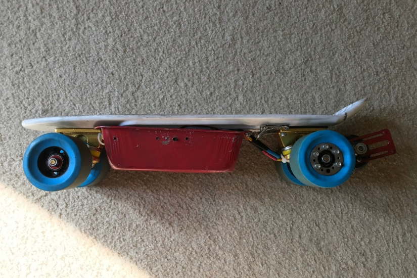
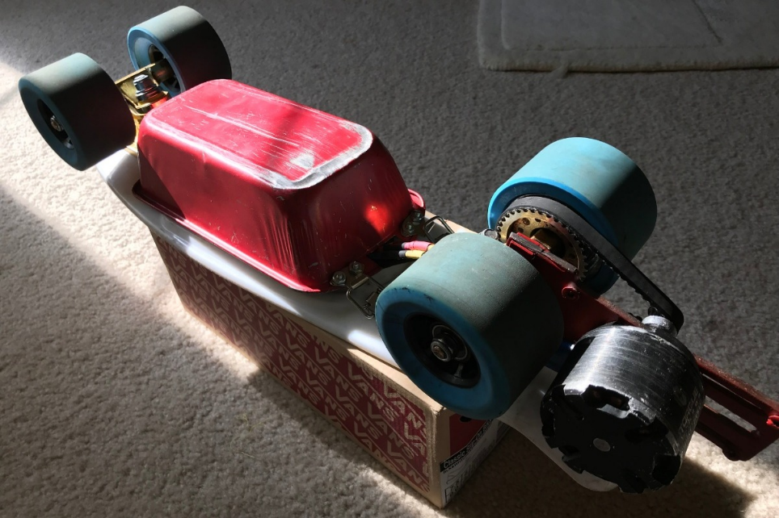

Washington State University Vancouver Majoring in electrical engineering with a minor in computer science
Currently seeking internships in electrical, computer, and software engineering
A collection of selected projects highlighting my experiences in electrical engineering and computer science
Selected Works
These projects are given opportunities to do some self-discoveries, to find what it is I am passionate about, and what fields of engineering would and would not work for me. I've specifically chosen these works as they demonstrate diversity
in interests knowledge to allow me to develop a wide range of technical and soft skills for potential internships.
Autonomous Solar Realignment
A prototype of a autonomous re-orientation system for outer space systems. This project was proposed for the ESRA IREC Spaceport America Cup 2018 with the help from Clark College's Aerospace Club.
HID Joystick
An educational project that aimed on making a human interface devices used for education and system operations
Electric Skateboard
An electric skateboard that is focused around transportation around campuses with a compact and mobile design to help students transition between buildings and areas.
=======
Nhan Nguyen
Thien Nhan H. Nguyen
Thiennhan.n98@gmail.com Washington State University Vancouver
Majoring in electrical engineering with a minor in computer science
A collection of selected projects highlighting my experiences in electrical engineering and computer science
Render made by Mike Herlein and the Payload team. 2019
OBJECTIVE: A conceptual firmware engineering project that focuses on solar cells and basic engineering principals. We intended to have the system reorient towards the greatest light source, through analog signals processing of four evenly placed photo resistors on the surface with same direction as the deployed solar panels.
Process: The project consists of I2C, and SPI communication between a microcontroller, sets of sensors, and a motor controller. Using photo resistors as feedback on the location of a light source relative to the system, the microcontroller updates the sets of motors to autonomously redirect itself towards that light source.
Outcomes: This project refined my understanding of embedded software concepts and computer science fundamentals through various implementations of schematic design and problem-solving solutions. The project guided me through independent research and development along with cooperative communication in design decisions.
OBJECTIVE: This prototype is a budgeted portable human interface device with a familiar appearance to an arcade-style gamepad. The focus was to have it capable of being used as a serial bus device among various operating systems and applications such as a gaming controller and automated machinery.
Process: Using an Arduino as the microprocessor for the project, I developed the system that processes the user’s input from the interactive 3d printed joysticks and buttons as a digital signal for feedback to the computer. An application developed by my team uses the serial port that the gamepad is connected to and converts the feedback into emulated keystroke for Windows or Linux operating systems.
Outcomes: As a challenge to ourselves, my team and I set a small budget for ourselves in creating this project. In doing so, we had significant limitations on the components used. However, this allowed us to develop hands-on prototyping skills by solving problems through analysis and developing work arounds to our resource limitation. Specifically, we programmed an application that could emulate the functions that the microcontroller controller wasn’t capable of handling.
Electric Skateboard


OBJECTIVE: An electric skateboard that is aimed towards being compact and portable for daily, short commuting for college students and/or local travelling. The project was intended to provide personalization and budgeting, by providing a Do-It-Yourself concept, where picking individual parts from various offshore vendors would provide significant cost-reducing alternatives to current market products.
Process: Two challenges came from this project. First is the researching and planning of the resources needed to complete this project, where I had to pick components that will work in tandem to achieve my goals. The other challenges of this project, that I brought upon myself, was that I had to design a custom mounting bracket where the drive train would be positioned so that it would serve both functionality and portability that I was hoping for. Given all the off-shelf components were compatible with each other, the assembly for this project was straight forward.
Outcomes: As a result of this being my first independent project, I obtained valuable technical skills such as development planning and budgets management, along with refining my capabilities of critical thinking and presenting reasonable solutions. From this, I could apply transferable skills of research and information gathering, time management, and accountability into my future projects.